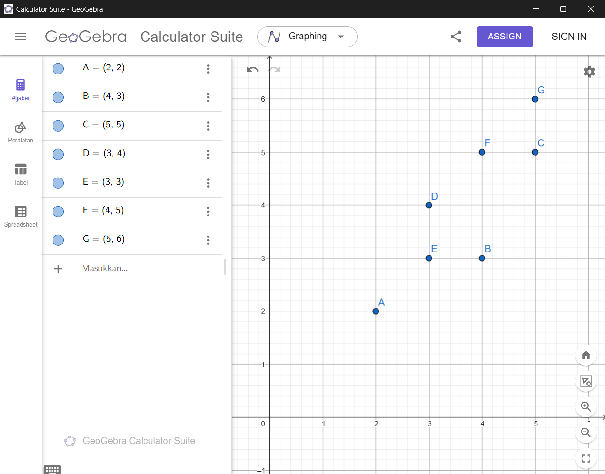

TUGAS LINEAR REGRESSION#
Analisis Data Menggunakan Regresi Linier#
Proyek ini digunakan untuk membuat analisis data menggunakan Regresi Linier:
Membuat program menghitung koefisien regresi menggunakan library dari sklearn
Menggunakan:
from sklearn.linear_model import LinearRegression
Menghitung secara analitik/matematis mencari koefisien regresi menggunakan operasi matriks
Dataset#
Data titik yang digunakan:

#Konsep Regresi Linear#
Persamaan regresi linear sederhana:
\(y = b_0 + b_1x\)
Keterangan:
y = variabel output x = variabel input \(b0\) = intercept \(b1\) = koefisien regresi/slope
Rumus Estimasi Koefisien#
Rumus matriks untuk mencari koefisien regresi:
\(\hat{\beta} = (X^TX)^{-1}X^TY\)
Membentuk Matriks#
Matriks X
\(X= \begin{bmatrix} 1 & 2\\ 1 & 4\\ 1 & 5\\ 1 & 3\\ 1 & 3\\ 1 & 4\\ 1 & 5 \end{bmatrix}\)
Kolom pertama berisi angka 1 sebagai dummy/intercept.
Matriks Y
\(Y= \begin{bmatrix} 2\\ 3\\ 5\\ 4\\ 3\\ 5\\ 6 \end{bmatrix}\)
Langkah Perhitungan Manual
Transpose Matriks \(X^T\) $\( X^T= \begin{bmatrix} 1&1&1&1&1&1&1\\ 2&4&5&3&3&4&5 \end{bmatrix} \)$
Menghitung \(X^TX\) $\( X^TX= \begin{bmatrix} 7 & 26\\ 26 & 104 \end{bmatrix} \)$
Menghitung Invers $\( (X^TX)^{-1} = \frac{1}{52} \begin{bmatrix} 104 & -26\\ -26 & 7 \end{bmatrix} \)$ Invers digunakan untuk menyelesaikan persamaan regresi linear secara matriks.
Menghitung \(X^TY\)
Hasil diperoleh dari perkalian transpose matriks \(X^T\) dengan matriks \(Y\)
Menghitung Koefisien Regresi
\(\hat{\beta} = (X^TX)^{-1}X^TY\)
Hasil:
Sehingga diperoleh:
\(b0\) = 0 \(b1\) = 1.0769
Persamaan Regresi $\( y = 1.0769x \)$
Artinya setiap kenaikan 1 nilai x, maka nilai y meningkat sebesar 1.0769.
Implementasi Python Menggunakan sklearn#
import numpy as np
from sklearn.linear_model import LinearRegression
# Data
x = np.array([2,4,5,3,3,4,5]).reshape(-1,1)
y = np.array([2,3,5,4,3,5,6])
# Membuat model
model = LinearRegression()
# Training model
model.fit(x, y)
# Menampilkan hasil
print("Intercept (b0) =", model.intercept_)
print("Koefisien (b1) =", model.coef_[0])
# Persamaan regresi
print(f"y = {model.intercept_:.4f} + {model.coef_[0]:.4f}x")
Output Program#
Intercept (b0) = 0.0
Koefisien (b1) = 1.0769
y = 0.0000 + 1.0769x
Kesimpulan#
Pada proyek ini perhitungan dilakukan menggunakan dua metode, yaitu:
Perhitungan manual menggunakan operasi matriks
Menggunakan library
LinearRegressiondari sklearn
Hasil kedua metode menghasilkan persamaan regresi:
\(y = 1.0769x\)
Persamaan tersebut menunjukkan bahwa setiap kenaikan 1 nilai x akan meningkatkan nilai y sebesar 1.0769.